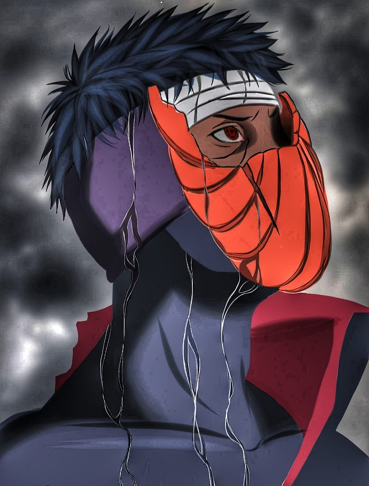

Main Heroes
Minato Namikaze - Naruto's father

Sasuke Uchica- Naruto's best friend and biggest rival
Kakashi - Naruto's teacher

Enemy and hero of the leaf
Naruto was born on the night of October 10th to Minato Namikaze (the Fourth Hokage) and Kushina Uzumaki (the second jinchuriki of the Nine-Tails). Naruto Uzumaki este un personaj fictiv din seriile manga si anime Naruto, creat de Masashi Kishimoto ca personaj principal al seriei.

Minato Namikaze - Naruto's father
Sasuke Uchica- Naruto's best friend and biggest rival
Kakashi - Naruto's teacher
Enemy and hero of the leaf
Wake up to reality! Nothing ever goes as planned in this accursed world. The longer you live, the more you realize that the only things that truly exist in this reality are merely pain. suffering and futility. Listen, everywhere you look in this world, wherever there is light, there will always be shadows to be found as well. As long as there is a concept of victors, the vanquished will also exist. The selfish intent of wanting to preserve peace, initiates war. and hatred is born in order to protect love. There are nexuses causal relationships that cannot be separated - Madara Uchiha,
--Quote Madara UchicaKeep updated for latest news